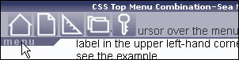

Place your cursor over the menu label in the upper left-hand corner to see the example.
This is a example of combining four different CSS tricks: Hover Sidebar, Enlarger Button Menu, Background-Image to Replace Text, Pure CSS Popups.
In the working stylesheet, all the CSS is of level 1 and 2.
Screenshots in Mozilla

The HTML Code
<div id="nav"> <ul> <li><a href="/" class="home"><span>Home</span></a></li> <li><a href="new/" class="new"><span>New</span></a></li> <li><a href="edit/" class="edit"><span>Edit</span></a></li> <li><a href="manage/" class="manage"><span>Manage</span></a></li> <li><a href="logout/" class="logout"><span>Logout</span></a></li> </ul> </div>
The CSS Code
Check out the working stylesheet and dissect it. You can also view the original stylesheet that makes more sense to me but does not work as well.
Compatibility
First off, from my testing it does not work in Internet Explorer 6.0. It does work in Mozilla 1.4., Opera 6.0., and Safari 1.0. Thanks to Tom, Daniel Von Fange, and Paul Hammond for the testing it in Safari.
Return to CSS Play
© 2003 Seamus P. H. Leahy
You may take and improve upon this.